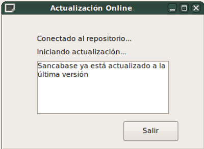
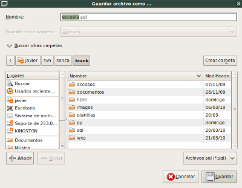
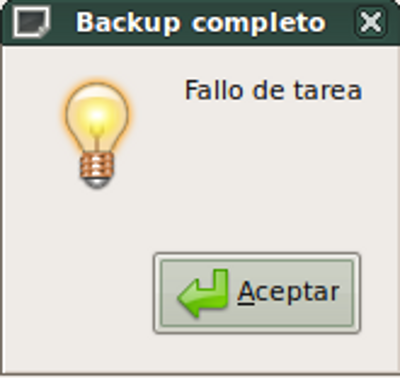

Administrador de Centros
de Formación Profesional

Menú "Aplicación":
Este menú permite realizar tareas intrínsecas de la aplicación de mantenimiento y seguridad:
- Actualizar:
Esta opción abre una ventana que se conecta al repositorio y baja las actualizaciones directamente desde el svn. Luego de hacerlo, es conveniente cerrar Sancabase para que los cambios tomen efecto al volver a iniciar la aplicación - Exportar:
Podremos desde esta feature, hacer una copia de seguridad de nuestra base de datos. Por defecto querrá guardar un archivo llamado escuela.sql, que se podrá guardar en cualquier lugar de la máquina, aunque conviene hacerlo en un dispositivo USB, enviarlo por red, etc. - Resguardo de planillas:
Si bien "Exportar" hace un backup de la base de datos, no guarda los archivos del programa. Para poder guardar estos archivos, usamos esta opción. En la versión original de Sancabase, esta posibilidad está hardcodeada para que sirva directamente a los miembros de la red de Cáritas del CFP 401 de Vicente López, y no preguntará en qué lugar guardar el backup, sino que lo hará directamente en el pendrive provisto por el PNUD y que deberá conetarse antes de dar clic en el menú, en caso de error en el pendrive, mostrará un mensaje de error. - Salir:
Tal como el nombre indica, nos sacará de Sancabase